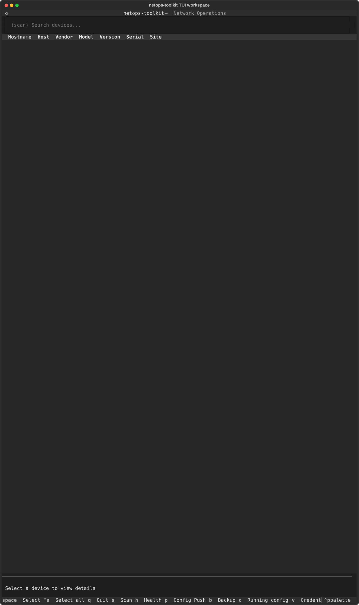
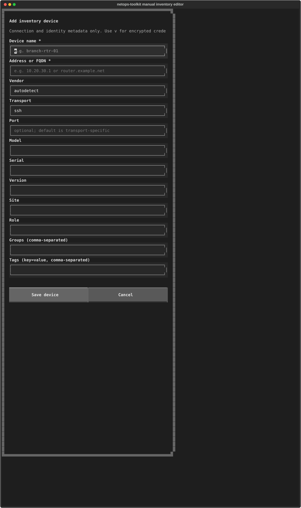
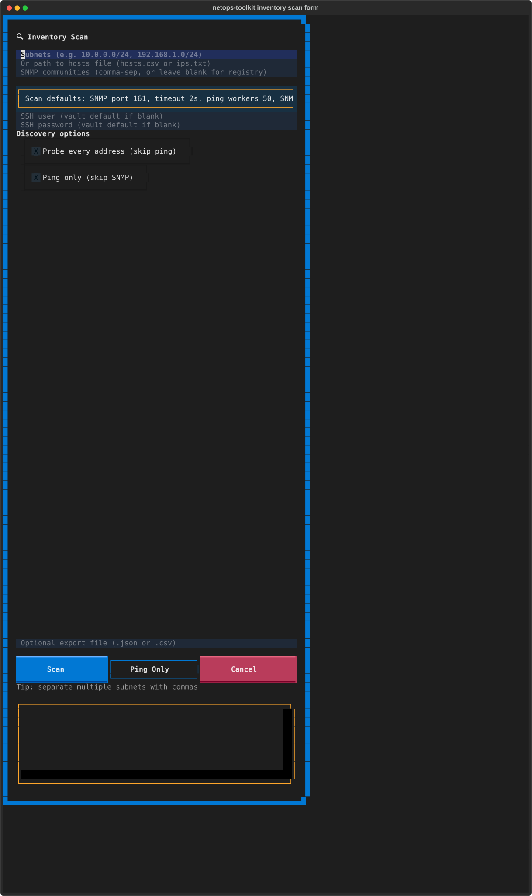

Terminal UI Guide¶
The optional Terminal UI (TUI) brings inventory browsing, discovery, health checks, backups, configuration changes, credentials, settings, and bastion routing into one keyboard-friendly interface. It operates on the same local inventory and settings as the command-line tools; it does not require a running service.
See Terminal UI Screen Reference for a captured view of every user-facing screen.
Launch the TUI¶
Install the tui extra, then start either entry point:
Use compatibility mode for a terminal that does not render Unicode or high-colour UI elements cleanly:
Compatibility mode uses portable ASCII selection indicators. It is useful for older terminal emulators and remote-console sessions; it does not change scan or device-operation behavior.
Workspace¶
The workspace lists the local inventory in the upper pane and shows details of the focused device below it. A new installation can show an empty list until you add an inventory or discover devices with a scan.

Use the arrow keys to move through devices. Press Space to select the
focused device, or Ctrl+A to select or clear every inventory device, including
devices hidden by the current search filter. When one or more devices are
selected, bulk actions apply to that selection; otherwise they apply to the
focused device.
| Key | Action |
|---|---|
s |
Open inventory scan |
h |
Run a health check |
p |
Open configuration push |
b |
Back up configurations |
v |
Manage credentials |
o |
Open settings |
j |
Manage the active bastion |
a |
Add a device to the inventory manually |
e |
Edit the focused inventory device |
Ctrl+E |
Export inventory to CSV |
/ |
Focus device search |
Enter |
Show more device detail |
c |
Fetch the focused device's running configuration |
Esc |
Close a detail pane or modal |
q |
Quit |
Add or correct inventory manually¶
Press a to add a device without first running a scan. The editor uses one
labelled field per line so it remains readable in remote terminal clients.
Enter a device name and address or FQDN, then add any connection and identity
metadata you know: vendor, transport, port, model, serial, version, site,
role, groups, and tags. Press e from a focused device to correct the same
fields later.
The editor preserves scan-collected fields it does not own, such as uptime,
MAC address, neighbors, memory, flash, and any existing collected community
data. It does not accept or add SSH passwords, private keys, enable passwords,
or SNMP community strings. Use v to manage reusable encrypted credentials
instead.

Discover devices¶
Press s to open the scan form. Enter either one or more comma-separated
CIDR subnets, or the path to a hosts/CSV file. Then enter SNMP communities if
your devices require them. Credentials are optional: blank SSH credentials
use the configured vault default when available.

The scan form shows a compact summary of its saved defaults rather than asking
for the same tuning values on every run. Press Ctrl+O from Scan, Health, or
Backup to open TUI Settings. That screen is the single persistent place to
set SNMP port/timeout/concurrency, ping workers, SSH timeout/concurrency,
health CPU and memory alert thresholds, and backup workers. The summary updates
after you return from Settings.
TUI Settings also controls local logging. By default, the current daily
log file is capped at 10 MiB and records INFO and higher. When the cap is
reached, netops-toolkit removes the oldest complete entries before adding each
new entry, so a long session does not grow the log without limit. Change the
cap or choose DEBUG, INFO, WARNING, or ERROR in TUI Settings.
The same shared setting is available to scripts and automation:
- Probe every address skips ICMP first. Use it only when ICMP is blocked and the target range is suitably small.
- Ping only skips SNMP identification. The Ping Only button enables the same mode for that run.
Choose Scan for full discovery, Ping Only for reachability only, or Cancel to return to the workspace. The output-file field is optional and can write a JSON or CSV fragment.
Input and terminal behavior¶
Text fields accept normal keyboard input and terminal paste. Every text field,
including credential scope and target in the vault, has its own full-width
line with an explicit high-contrast input area. This avoids terminal renderers
collapsing adjacent input boxes into unreadable controls. Do not paste
passwords into a shared terminal transcript. For reusable credentials, open
the credentials screen with v and use the encrypted vault instead.
Create the vault once, then save default, group, or device credentials. Those
credentials remain encrypted on disk after the TUI closes. The vault password
is entered only to unlock the existing vault for the current TUI session; it
is intentionally not stored alongside the credentials. When c needs SSH
credentials to fetch a running configuration, the TUI opens this guided vault
screen instead of leaving an unexplained "unlock" error.
Network operations run in the background. Errors and progress are written to the screen's log area. A failed operation or contained UI error keeps the TUI open so you can continue working on other devices.
For scanner details such as file formats, output, merge behavior, and network
requirements, see Network Scanner. For settings stored by the TUI,
including concurrency defaults, use o from the workspace.